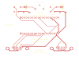
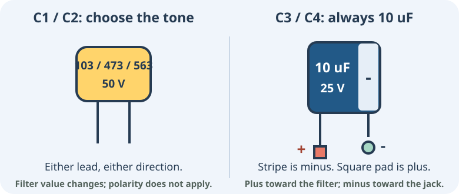

Stock · start here
More treble detail
10 nFMarking: 103
Also written: 0.01 uF
Buy 2. Nominal cutoff: 15.9 kHz. Matches the stock BOM and schematic.
L3 build guide · two-player Genesis · stereo line-out
Build the GenThang L3 carrier: two Genesis controller ports, a removable Tang Nano 20K and a 3.5 mm stereo output for powered speakers. Everything you solder is through-hole.
The author confirms the GPIO17 audio move works and has submitted L3 to OSH Park. Test scope and limits.

Step 1
| Qty | Part | What matters |
|---|---|---|
| 1 | L3 carrier PCB | OSH Park ZIP; do not order an old L1/L2 archive. |
| 1 | Tang Nano 20K | Two downward 1x20 male headers; Harwin M20-9992046 is the documented socket mate. |
| 2 | Harwin M20-7822046 female sockets | J5/J6: 1x20, 2.54 mm pitch, 8.5 mm tall. Source |
| 2 | Kycon K22X-E9P-N male DB9 | J1/J2: right angle, boardlocks, recessed #4-40 inserts. Not NJ. Source |
| 1 | CUI / Same Sky SJ1-3523N | J3: exact 3-pin stereo jack. Not the 5-pin PJ-307. Drawing |
| 2 | 1 kOhm resistors | R1/R2: 1/4 W axial, 7.62 mm lead spacing. |
| 2 | 47 kOhm resistors | R3/R4: 1/4 W axial, 7.62 mm lead spacing. |
| 2 | Nonpolarized filter caps | C1/C2: choose 10, 47 or 56 nF below; 50 V, 5.0 mm lead spacing. |
| 2 | 10 uF radial electrolytics | C3/C4: 25 V, 5 mm body diameter, 2.0 mm lead spacing. Polarized. |
| 1 each | TF card, USB-C cable, HDMI cable/display | FAT32/exFAT card with your own ROMs; USB-C supplies the Nano. |
| 1-2 | Wired Genesis controllers | Canonical 3.3 V-only DB9 wiring; keep power off when connecting pads. |
| 1 | Powered speakers / amplifier + stereo TRS cable | 3.5 mm tip = left, ring = right, sleeve = ground. Start with volume at zero. |
Tools: soldering iron and solder, flush cutters, multimeter, a small screwdriver if mounting the board, and a computer with Gowin Programmer.
PCB order: standard 2-layer, 1 oz copper, 1.6 mm board. In the OSH Park preview, check the L3 marking, 100 x 70 mm outline, rear jack notch and three 0.60 x 1.40 mm plated jack slots. No stencil or SMT assembly is needed.
Step 2 · The easy capacitor chooser
C1 and C2 set the analog low-pass response. Choose one card below and buy two capacitors of that value: one for the left channel, one for the right. If unsure, start with the green stock option.
Stock · start here
Marking: 103
Also written: 0.01 uF
Buy 2. Nominal cutoff: 15.9 kHz. Matches the stock BOM and schematic.
Optional · darker
Marking: 473
Also written: 0.047 uF
Buy 2. Nominal cutoff: 3.39 kHz. Less high-frequency content.
Optional · darker still
Marking: 563
Also written: 0.056 uF
Buy 2. Nominal cutoff: 2.84 kHz. A good starting point for the darker Model 1-style option.

Keep R1/R2 = 1 kOhm, R3/R4 = 47 kOhm, C3/C4 = 10 uF. Only C1/C2 change. No PCB or firmware changes are required for these choices. Power off and unplug USB before replacing parts.
The cutoff numbers use fc = 1 / (2 * pi * R * C) with a 1 kOhm
resistor. Real loading shifts the response. These options approximate one
analog filter corner, not a complete original Genesis audio circuit.
The optional responses have not been measured on L3.
Detailed filter notes.
Step 3
Parts go on the silkscreen side; solder underneath. With DB9 ports at the front/bottom: USB-C faces left, HDMI right, audio jack rear/top. J5 is the rear socket; J6 is the front. Socket pin 1 is at the left/USB-C end.
Inspect for bridges and trim sharp leads. Count 13 fitted parts and four empty mounting holes. Detailed assembly notes.
Step 4 · Unpowered, Nano removed
Use the continuity checklist for every DB9 contact. Number contacts from the USB-C/left end, not from the front edge. DB9 mating-face and solder-side views are mirrored: use molded pin numbers.
| DB9 pin | Signal | P1 / J1 to J6 contact | P2 / J2 to J5 contact |
|---|---|---|---|
| 1 | Up / D0 | 1 | 5 |
| 2 | Down / D1 | 2 | 6 |
| 3 | Left / D2 | 5 | 9 |
| 4 | Right / D3 | 8 | 10 |
| 5 | 3.3 V supply | 19 | 16 |
| 6 | TL / B, A | 9 | 12 |
| 7 | TH select | 12 | 17 |
| 8 | Ground | 20 | 15 |
| 9 | TR / C, Start | 13 | 18 |
| Check | Required result |
|---|---|
| J6.14 / GPIO31 to R1 pad 1 | Continuity: left audio input. |
| J6.15 / GPIO17 to R2 pad 1 | Continuity: right audio input. No jumper required on L3. |
| TRS plug tip to C3 minus | Continuity with the plug inserted: left output, J3 pin 2. |
| TRS plug ring to C4 minus | Continuity with the plug inserted: right output, J3 pin 3. |
| TRS plug sleeve / J3 pin 1 | Continuity to ground, as are the DB9 shells and boardlocks. |
| C3/C4 positive leads | Connect to the R1/R2 filter side, not directly to the jack. |
| 3V3 to GND | No short; this should read open with the Nano removed. |
| J5.1 (5 V) and J5.7 (old GPIO56) | Unconnected on the carrier. Do not bridge old and new audio outputs. |
Step 5
The GPIO17 change is already in GenThang main. The older releases through 1.9.2 use GPIO56 for right audio and will leave L3's right channel without the intended audio signal.
genthang_nano20k_db9_gpio17_flash.bin
and its SHA256SUMS.
Keep them in the same folder and verify with
sha256sum -c SHA256SUMS --ignore-missing. Do not use the raw handheld or bitstream-only image._flash.bin and wait for success..md,
.bin or .gen ROMs, up to 4 MB each.Full flashing instructions · TF card setup. Standard builds do not support USB ROM upload; lift the Nano out to update the card.
Step 6
If one channel is quiet or hums: first check the exact SJ1-3523N jack, its solder joints, plug-to-cap continuity, cable and speaker channel. Changing filter caps changes the tonal response; it is not a fix for a broken joint or incorrect jack. GPIO17 still carries an on-board LED load.
Standalone mounting: use the four M2.5 holes with nonconductive supports, keeping underside joints off the desk or metal. L3 retains L2 geometry, not O1's Nano orientation: the O1 biomechanical case is not its matching enclosure. Check real cable overmolds before selecting an enclosure.
Bench files
This page and its SVG illustrations have no external viewer or font dependency. Print it from your browser for a paper or PDF bench copy. Firmware downloads and external references require internet access.